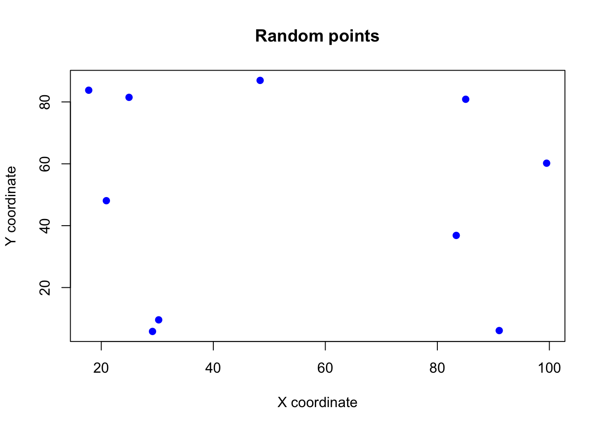

set.seed(1038)
farms <- 1:100
sample(x = farms, size = 10)Welcome 👋
Welcome to Tutorial 2. In this tutorial we will show you how to:
- Take a random sample from a finite population; and
- take a random sample from an infinite population.
0.1 Getting started
In some instances you will see notes like this one in the margin, which often contain useful tips or reminders.
- These tutorials are designed to be comprehensive yet accessible. I recommend following along and grasping the statistical concepts as much as you can.
- You will need to create your own Quarto (recommended) or R Markdown document to complete the exercises. In RStudio, go to
File -> New File -> Quarto Document...orFile -> New File -> R Markdown...and follow the intuitive prompts.
- For those of you who are interested in furthering your data science skills and are keen to learn more, I have included optional sections. These techniques are not necessary for you to get through ENVX2001 – we do not cover code in the exams. Nevertheless these skills come handy in report writing and data analysis and can be a great addition to your projects.
- If you have any suggestions for improvement, please let me know! Send me an email (you can find my details on Canvas).
1 Sampling finite populations
There are 2 types of populations from which we may wish to take a random sample; finite and infinite populations.
- Finite populations are made of discrete objects like households, people, farms etc.
- Infinite populations are continuous, such as soil, water in a stream.
1.1 Finite populations
Imagine a hypothetical situation where we know there are 100 farms in a catchment, and we wish to survey 10 of them about their management practices. To ensure unbiased results, the 10 farms should be randomly selected.
R can do this for us quite easily.
Below is the full code to randomly select 10 farms from the 100 in the catchment. We will break it down step by step.
Random, but reproducible
set.seed(1038)The set.seed() function is used to “fix the seed” of the random number generator. This is useful when you want to ensure that the random numbers generated are the same each time you run the code, which is useful for reproducibility. We don’t want to randomly select 10 farms, and then run the code again and get a different set of 10 farms!
The number in the brackets can be any number you choose1.
1 It is good practice to be as unbiased as possible when picking a number for set.seed(). A good choice is the 4 digits for the current time of the day.
Identifying the population
farms <- 1:100If there are 100 farms, then we need to be able to select from them. This ensures that each farm is unique so that we can perform random sampling without replacement (i.e. we should not be sampling the same farm twice).
The colon operator (:) creates a sequence of numbers from the first number to the second number. For 100 farms we can create a sequence of numbers from 1 to 100 easily using this operator, and assign it to the object farms.
Using : is arguably much easier than typing out all the numbers from 1 to 100.
Simple random sampling
sites <- sample(x = farms, size = 10)The sample() function is a base R function – part of the core R language – and is used to take a random sample of a specified size from a set of values.
Notice that no result is printed to the console when you assign (<-) something to and object like sites. This is because R is not being asked to print anything, and so unless the function itself prints something, nothing will be presented to you. You can print the result by typing sites again in a new line, which instructs R to print the value of sites.
To use the sample() function, you need to specify the following arguments:
x: the set of values from which to sample. In this case, the set of farms.size: the number of values to sample. In this case, 10 farms.
The sample() function returns a vector of the randomly selected farms, which we have assigned to the object sites.
We now have our random sample of 10 farms from the 100 in the catchment.
sites [1] 92 27 78 54 48 44 61 66 4 83If you have set the same seed as we have, you should get the same results, which makes your experimental design reproducible.
1.2 Bonus
A tidyverse approach to the same problem would be to use the dplyr package to create a sequence of numbers from 1 to 100, and then use the sample_n() function from the dplyr package to take a random sample of 10 farms from the 100 in the catchment.
The action can be performed using pipes (|>) to pass the result of one function to the next function, which makes the code easier to read and understand (this is an opinion shared by many).
library(dplyr)
sites <-
tibble(farm = 1:100) |> # create a tibble of 100 farms, and...
# ...pass it to the next function:
sample_n(10) # take a random sample of 10 farmslibrary(dplyr)
sites <- sample_n(tibble(farm = 1:100), 10)library(dplyr)
farms <- tibble(farm = 1:100)
sites <- sample_n(farms, 10)Piping is a powerful feature of the tidyverse in R and is common in other programming languages. Here, the |> operator is used to pass the result of the tibble() function to the sample_n() function.
Without piping, we would either have to nest the functions, or assign the result of the first function to an object and then pass that object in a stepped approach, which generates redundant “intermediate” objects before the final result is obtained.
The tibble() function is used to create a tibble, which is a modern version of a data frame. The sample_n() function is used to take a random sample of a specified size from a tibble.
sites# A tibble: 10 × 1
farm
<int>
1 14
2 41
3 96
4 73
5 25
6 88
7 40
8 32
9 39
10 21Unlike sample(), sample_n() returns a tibble object which shows data in a column rather than row. It may look clutered with a single variable but it is useful for working with data in the tidyverse, especially when you have multiple variables.
1.3 Practice
Use this section to practice taking random samples from finite populations. Code is provided, but hidden by default for you to make comparisons with your own. Click on the “Show the code” button to reveal the code.
- Create a random sample of 15 cats from a population of 300 cats.
Show the code
set.seed(1202)
cats <- 1:300
subjects <- sample(x = cats, size = 15)Show the code
set.seed(1202)
subjects <-
tibble(cat = 1:300) |>
sample_n(15)- Create a random sample of 20 trees from a population of 500 trees.
Show the code
set.seed(1204)
trees <- 1:500
subjects <- sample(x = trees, size = 20)Show the code
set.seed(1204)
subjects <-
tibble(tree = 1:500) |>
sample_n(20)2 Sampling infinite populations
With infinite populations, we deal with continuous variables which the function sample() cannot handle as it is designed to work with discrete variables only (whole numbers).
Uniform distribution
Imagine we are interested in estimating the mean of a measurement, spatially, across a study area. In this case we need to randomly choose a spatial location which is defined by a spatial coordinate, x and y, and the chance of choosing any location is equal. This is a uniform distribution.
Assuming a hypothetical study site 100m wide and 100m long where we wish to choose 10 random locations, then we may use the technique below to randomly select 10 locations based on x and y coordinates:
set.seed(1209)
xcoord <- runif(n = 10, min = 0, max = 100)
ycoord <- runif(n = 10, min = 0, max = 100)
sites_xy <- data.frame(xcoord, ycoord)The runif function generates random numbers from a uniform distribution, which means that each number is equally likely to be chosen.
The 3 main arguments (inputs) are:
n: the number of samplesmin: the minimum value we want in our random numbersmax: the maximum value we want in our random numbers
Use ?runif to learn more about the runif() function.
As we can see, with two variables (x and y) we now use a data frame to store the information.
sites_xy xcoord ycoord
1 29.14598 5.810736
2 48.35873 86.962687
3 99.50902 60.200064
4 17.75811 83.790473
5 24.95613 81.485062
6 20.90561 48.077787
7 91.04788 6.096274
8 30.24953 9.560046
9 83.37310 36.851027
10 85.06082 80.864236Exploring the data frame
Viewing the data frame can eventually become clunky, and this is even more so when we have more than 2 variables. Use the head() or str() functions to view the first few rows or the structure of the data frame, respectively.
head(sites_xy) xcoord ycoord
1 29.14598 5.810736
2 48.35873 86.962687
3 99.50902 60.200064
4 17.75811 83.790473
5 24.95613 81.485062
6 20.90561 48.077787Using head() shortens the output to the first few rows, which helps a lot when the data frame is large (you don’t want to see all the rows at once since the maximum number of rows that can be displayed is 1000).
str(sites_xy)'data.frame': 10 obs. of 2 variables:
$ xcoord: num 29.1 48.4 99.5 17.8 25 ...
$ ycoord: num 5.81 86.96 60.2 83.79 81.49 ...The str() function provides a concise summary of the structure of the data frame. It tells us the number of observations and variables, and the type of each variable. This function is probably the most used exploratory function in R.
Bonus: The glimpse() function from the dplyr package is a more modern and user-friendly version of str(), and works with both data frames and tibbles. It is especially useful when working with large data frames.
dplyr::glimpse(sites_xy)Rows: 10
Columns: 2
$ xcoord <dbl> 29.14598, 48.35873, 99.50902, 17.75811, 24.95613, 20.90561, 91.…
$ ycoord <dbl> 5.810736, 86.962687, 60.200064, 83.790473, 81.485062, 48.077787…Notice the :: operator in the glimpse() function. This is used to access functions from a package without loading the entire package. We basically interpret this as: “use the glimpse() function from the dplyr package.” Note that the package must be installed for this to work and you also need to know in advance that the function glimpse() is available in the package dplyr.
Visualising the data
After generating the random points, it is always a good idea to visualise them to see if there are issues with the random points. This is especially important when working with spatial data – in rare cases, the random points may cluster in one area, which is not ideal for a random sample.
We can use the plot() function to visualise the points, or we can use the ggplot2 package. With enough effort, both methods can produce the same plot, but ggplot2 is more flexible as it follows the grammar of graphics2. My recommendation is that you learn ggplot2 as it is more powerful and flexible. A good idea in this case is to plot in base R first, and then asking GenAI to plot the same plot using ggplot2.
2 The grammar of graphics is a system for understanding and building graphs by combining components, such as data, scales, and layers, in a consistent and structured way.
plot(sites_xy,
pch = 19,
col = "blue",
main = "Random points",
xlab = "X coordinate",
ylab = "Y coordinate"
)
library(ggplot2)
ggplot(
data = sites_xy,
aes(x = xcoord, y = ycoord)
) +
geom_point() +
labs(
title = "Random points",
x = "X coordinate",
y = "Y coordinate"
) +
theme_bw()
Clearly, one issue is that not all study areas are rectangles! Rather, they are quite often irregular. This artificial dataset is just to illustrate the concept of sampling infinitely, rather than be practically useful. The analysis of spatial data is not in the scope of this unit.
2.1 Practice
Use this section to practice taking random samples from infinite populations. Code is provided, but hidden by default for you to make comparisons with your own. Click on the “Show the code” button to reveal the code.
- Generate 20 random points within a 100m x 100m study area.
Show the code
set.seed(1242)
xcoord <- runif(n = 20, min = 0, max = 100)
ycoord <- runif(n = 20, min = 0, max = 100)
sites <- data.frame(xcoord, ycoord)- Now this combines
sample()andrunif()functions. Userunif()to generate 100 data points between 10 and 20, and then usesample()to sample 20 of these points.
Show the code
set.seed(1242)
data <- runif(n = 100, min = 10, max = 20)
sampled_data <- sample(data, size = 20)- Use
ggplot2to plot a histogram of the sampled data generated in the previous step.
Show the code
library(ggplot2)
ggplot(
data = data.frame(data = sampled_data),
aes(x = data)
) +
geom_histogram(
binwidth = 0.5,
color = "black"
) +
labs(
title = "Histogram of sampled data",
x = "Value",
y = "Frequency"
) +
theme_bw()3 Done!
Thanks!
This is the end of the tutorial.
If you have any questions or suggestions, let me know during the lectures or via email. You know where to find me!